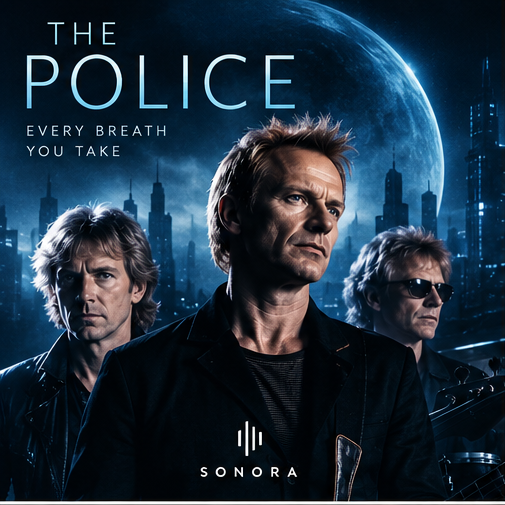

Artista destacado
ROCK · NEW WAVE
The Police
El trío británico unió rock, reggae y new wave con una identidad propia.
NOW FEATURED
Every Breath You Take
01Selección actual
RockSu universo
SONORASelección editorial